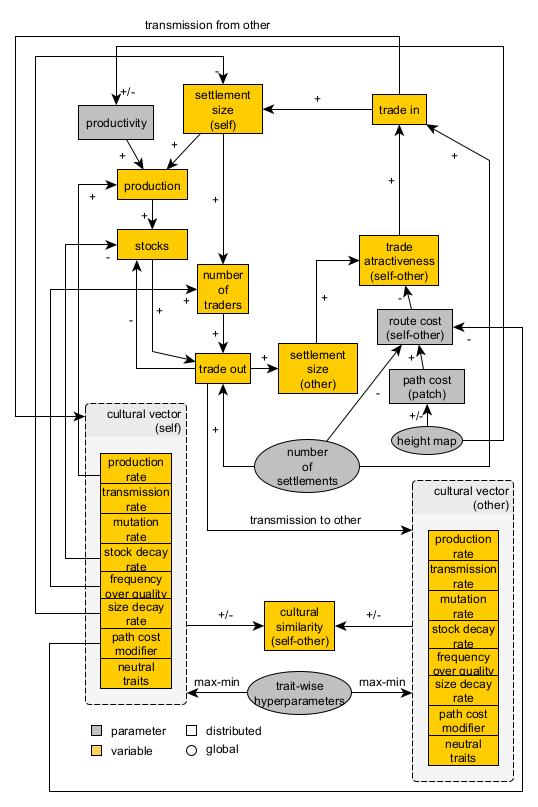
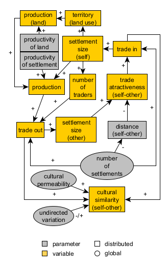

## Messara Trade # 23. Case study and conceptual model --- ## 23.1 Evidence and case study > Paliou, Eleftheria, and Andrew Bevan. 2016. ‘Evolving Settlement Patterns, Spatial Interaction and the Socio-Political Organisation of Late Prepalatial South-Central Crete’. Journal of Anthropological Archaeology 42 (June): 184–97. https://doi.org/10.1016/j.jaa.2016.04.006. **Takeaways for our conceptual model** - **Case study**: settlement interaction and the emergence of hierarchical settlement structures in Prepalatial south-central Crete - **Phenomena to represent**: cycles of growth and collapse (i.e., fluctuations in the scale of site occupation). Focus on site interconnectivity and its relationship with settlement size. - **Main assumption**: topography, transport technology, exchange network, settlement size, wealth, and cultural diversity are intertwined in a positive feedback loop (i.e. big gets bigger or busy gets busier). - **Dynamics we expect and want to explore**: the long-term consolidation of central sites and larger territorial polities. --- ## 23.2 Extending the Pond Trade model  --- ## 23.2 Extending the Pond Trade model *Mechanisms*: - ↑ settlement size → ↑ settlement territory - ↑ settlement territory → ↑ production (of land) - ↑ productivity (of land) → production (of land) - ↑ production (of land) → ↑ production (of settlement) --- ## 23.2 Extending the Pond Trade model  *Expected dynamics*: production is 'grounded', *i.e.*, dependent on each settlement catchment area size and productivity --- # 24 Importing spatial data: elevation and site data --- ## 24.1 The `gis`extension - Used to import and manage spatial data (raster and vector) - Documentation: https://ccl.northwestern.edu/netlogo/docs/gis.html ```NetLogo extensions [ gis ] ``` --- ## 24.2 datasets - Files in "data/Cretedata/" (credit: Prof. Eleftheria Paliou) - Site coordinates were randomly shifted in QGIS for anonymization purposes - Datasets: - `EMIII_MMIAsites.shp`: Prepalatial sites (Early Minoan III to Middle Minoan IA) - `MMIBsites.shp`: Middle Minoan IB sites - `dem15.asc`: Elevation data (Digital Elevation Model) at 15m resolution - `rivers.shp`: Major rivers in Messara Valley --- ## 24.3 Loading GIS data Use ´gis:load-dataset´ to load raster and vector data ```NetLogo globals [ ;;; GIS data holders sitesData_EMIII-MMIA sitesData_MMIB elevationData riversData ] ... to load-gis ; Load all of our datasets set sitesData_EMIII-MMIA gis:load-dataset "data/Cretedata/EMIII_MMIAsites.shp" set sitesData_MMIB gis:load-dataset "data/Cretedata/MMIBsites.shp" set elevationData gis:load-dataset "data/Cretedata/dem15.asc" set riversData gis:load-dataset "data/Cretedata/rivers.shp" ; Set the world envelope to the union of all of our dataset's envelopes gis:set-world-envelope (gis:envelope-of elevationData) end ``` --- ## 24.4 Readjusting `world` settings ```Netlogo globals [ width height ;;; GIS data holders sitesData_EMIII-MMIA sitesData_MMIB elevationData riversData ] to set-world-dimensions ;;; for better performance, we take a multiple fraction of the dimensions of elevationData, ;;; so that patches will get average values or more regular sets of pixels let patchXpixelScale 0.1 ;;; keep it less than 0.25 let pixelExtentMargin 50 set width ceiling ((pixelExtentMargin + gis:width-of elevationData) * patchXpixelScale) set height ceiling ((pixelExtentMargin + gis:height-of elevationData) * patchXpixelScale) resize-world 0 width 0 height set-patch-size 3 end ``` --- ## 24.5 Calculating patch dimensions based on GIS data ``` globals [ width height areaPerPatch patchWidth ;;; GIS data holders sitesData_EMIII-MMIA sitesData_MMIB elevationData riversData ] to set-world-dimensions ;;; for better performance, we take a multiple fraction of the dimensions of elevationData, ;;; so that patches will get average values or more regular sets of pixels let patchXpixelScale 0.1 ;;; keep it less than 0.25 let pixelExtentMargin 50 set width ceiling ((pixelExtentMargin + gis:width-of elevationData) * patchXpixelScale) set height ceiling ((pixelExtentMargin + gis:height-of elevationData) * patchXpixelScale) resize-world 0 width 0 height set-patch-size 3 ; Match NetLogo world to the dataset envelope gis:set-world-envelope gis:envelope-of elevationData ; Calculate area equivalent to a patch ; if units are in degrees ;set areaPerPatch calculate-patch-area-degrees elevationData ; if units are in meters set areaPerPatch calculate-patch-area-meters elevationData set patchWidth sqrt (areaPerPatch * 10000) ;;; m = ha * 10,000 end ``` --- ## 24.5 Calculating patch dimensions based on GIS data ``` to-report calculate-patch-area-degrees [ rasterData ] ; Get the envelope: [min-x min-y max-x max-y] in degrees let env gis:envelope-of rasterData let min-lon item 0 env let min-lat item 2 env let max-lon item 1 env let max-lat item 3 env ; Calculate central latitude (φ₀) let lat0 (min-lat + max-lat) / 2 ; Get raster resolution (number of cells) set width gis:width-of rasterData ; number of columns set height gis:height-of rasterData ; number of rows ; Cell size (in degrees) let dlon (max-lon - min-lon) / width let dlat (max-lat - min-lat) / height ; Earth radius (meters) let R 6371000 ; Area per raster cell in square meters (approximate) let patchArea (R ^ 2) * abs dlon * abs dlat * cos(lat0 * pi / 180) * (pi / 180) ^ 2 ; Report the result ; print (word "Approximate area per patch: " patchArea " m² (" (patchArea / 10000) " ha) at latitude " lat0) report patchArea / 10000 end to-report calculate-patch-area-meters [ gisData ] let env gis:envelope-of gisData let gis-width item 1 env - item 0 env let gis-height item 3 env - item 2 env ; print (word "width: " gis-width ", height: " gis-height) let num-patches-x max-pxcor - min-pxcor + 1 let num-patches-y max-pycor - min-pycor + 1 ;set patch-width gis-width / num-patches-x let patchArea (gis-width * gis-height) / (num-patches-x * num-patches-y) ; print (word "area-per-patch=" area-per-patch) set patchArea patchArea / 10000 ; square meters to hectares report patchArea end ``` <small>When in doubt about the units of your GIS data, use one of the procedures and check the output.</small> --- ## 24.6 Applying GIS data to patches ```NetLogo globals [ patchesWithElevationData noElevationDataTag maxElevation width height areaPerPatch patchWidth ;;; GIS data holders sitesData_EMIII-MMIA sitesData_MMIB elevationData riversData ] breed [ sites site ] sites-own [ name siteType period ] patches-own [ elevation isRiver ] to setup-patches setup-elevation setup-rivers end to setup-elevation gis:apply-raster elevationData elevation set patchesWithElevationData patches with [(elevation <= 0) or (elevation >= 0)] ;;; replace NaN values added by the gis extension with noElevationDataTag, so it does not generate problems after set noElevationDataTag -9999 ask patches with [not ((elevation <= 0) or (elevation >= 0))] [ set elevation noElevationDataTag ] set maxElevation max [elevation] of patchesWithElevationData end to setup-rivers ask patchesWithElevationData [ set isRiver gis:intersects? riversData self ] end to setup-sites ;;; gis extension will re-use a site, if it was already created in a position, ;;; and modify any values we already set. ;;; In order to avoid this, we cannot use gis:create-turtles-from-points let datasetPeriod "EMIII-MMIA" foreach gis:feature-list-of sitesData_EMIII-MMIA [ vectorFeature -> create-site-from-feature vectorFeature datasetPeriod ] set datasetPeriod "MMIB" foreach gis:feature-list-of sitesData_MMIB [ vectorFeature -> create-site-from-feature vectorFeature datasetPeriod ] end to create-site-from-feature [ vectorFeature datasetPeriod ] let coordTuple gis:location-of (first (first (gis:vertex-lists-of vectorFeature))) let featureName gis:property-value vectorFeature "NAME" let featureType gis:property-value vectorFeature "TYPE" let long item 0 coordTuple let lat item 1 coordTuple create-sites 1 [ setxy long lat set name featureName set siteType featureType set period datasetPeriod set shape "dot" ] end ``` <small> The gis extension will generate NaN values for patches without elevation data. Since these are not valid numbers, we replace them with a tag value (-9999) to avoid issues later in the simulation.</small> --- ## 24.7 Higher level procedure: `create-map` ```NetLogo to create-map load-gis ;; load in the GIS data set-world-dimensions ;; set world dimensions according to GIS data setup-patches ;; use GIS data to set patch variables setup-sites ;; create site agents with properties from sitesData end ``` --- ## 24.8 Visualisation ```NetLogo to update-display display-rivers display-sites paint-elevation end to display-sites ;;; sites dated to EMIII-MMIA: yellow gis:set-drawing-color yellow gis:draw sitesData_EMIII-MMIA 2 ;;; sites dated to MMIB: red gis:set-drawing-color red gis:draw sitesData_MMIB 2 ;;; sites dated to both EMIII-MMIA and MMIB: orange end to display-rivers gis:set-drawing-color blue gis:draw riversData 1 end to paint-elevation ;;; paint patches according to elevation ;;; NOTE: we must filter out those patches outside the DEM ask patchesWithElevationData [ let elevationGradient 100 + (155 * (elevation / maxElevation)) set pcolor rgb (elevationGradient - 100) elevationGradient 0 ] end ``` <small>Sites from different periods are visualized in different colors. Patches are colored according to their elevation (from green to brown). Rivers are drawn in blue.</small> --- ## 24.9 Set up procedure and testing ```NetLogo to setup clear-all create-map update-display end ``` --- ## 24.10 Checking the milestone File (module 1)  --- # 25 Calculating water flow accumulation --- ## 25.1 Water flow algorithm - Implementation taken from the Land submodel in the [Indus Village model](https://github.com/Andros-Spica/indus-village-model) (Angourakis 2021) - Based on the algorithm described in Jenson & Domingue (1988) through the implementation used by Huang & Lee (2015) --- ## 25.2 Adding the main procedures ```NetLogo globals [ ... ;;; variables maxFlowAccumulation ] ... patches-own [ elevation ; elevation above sea level [m] flow_direction ; the numeric code for the (main) direction of flow or ; drainage within the land unit. ; Following Jenson & Domingue (1988) convention: ; NW = 64, N = 128, NE = 1, ; W = 32, <CENTRE>, E = 2, ; SW = 16, S = 8, SE = 4 flow_receive ; Boolean variable stating whether or not the land unit receives ; the flow of a neighbour. flow_accumulation ; the amount of flow units accumulated in the land unit. ; A Flow unit is the volume of runoff water flowing from one land unit ; to another (assumed constant and without losses). flow_accumulationState ; the state of the land unit regarding the calculation of flow ; accumulation (auxiliary variable). isRiver ] ... ;======================================================================================================= ;;; START of algorithms based on: ;;; Jenson, S. K., & Domingue, J. O. (1988). ;;; Extracting topographic structure from digital elevation data for geographic information system analysis. ;;; Photogrammetric engineering and remote sensing, 54(11), 1593-1600. ;;; ===BUT used elsewhere, such as in the algorithms based on: ;;; Huang, P., Lee, K.T. A simple depression-filling method for raster and irregular elevation datasets. ;;; J Earth Syst Sci 124, 1653–1665 (2015). https://doi.org/10.1007/s12040-015-0641-2 ;======================================================================================================= to-report get-drop-from [ aPatch ] ; ego = patch ; "Distance- weighted drop is calculated by subtracting the neighbor’s value from the center cell’s value ; and dividing by the distance from the center cell, √2 for a corner cell and one for a noncorner cell." (p. 1594) report ([elevation] of aPatch - elevation) / (distance aPatch) end to-report is-at-edge ; ego = patch report any? neighbors with [elevation = noElevationDataTag] end to-report has-flow-direction-code ; ego = patch if (member? flow_direction [ 1 2 4 8 16 32 64 128 ]) [ report true ] report false end to-report flow-direction-is [ centralPatch ] if (flow_direction = get-flow-direction-encoding ([pxcor] of centralPatch - pxcor) ([pycor] of centralPatch - pycor)) [ report true ] report false end to-report get-flow-direction-encoding [ x y ] if (x = -1 and y = -1) [ report 16 ] ; Southwest if (x = -1 and y = 0) [ report 32 ] ; West if (x = -1 and y = 1) [ report 64 ] ; Northwest if (x = 0 and y = -1) [ report 8 ] ; South if (x = 0 and y = 1) [ report 128 ] ; North if (x = 1 and y = -1) [ report 4 ] ; Southeast if (x = 1 and y = 0) [ report 2 ] ; East if (x = 1 and y = 1) [ report 1 ] ; Northeast end to-report get-patch-in-flow-direction [ neighborEncoding ] ; ego = patch ; 64 128 1 ; 32 x 2 ; 16 8 4 if (neighborEncoding = 16) [ report patch (pxcor - 1) (pycor - 1) ] if (neighborEncoding = 32) [ report patch (pxcor - 1) (pycor) ] if (neighborEncoding = 64) [ report patch (pxcor - 1) (pycor + 1) ] if (neighborEncoding = 8) [ report patch (pxcor) (pycor - 1) ] if (neighborEncoding = 128) [ report patch (pxcor) (pycor + 1) ] if (neighborEncoding = 4) [ report patch (pxcor + 1) (pycor - 1) ] if (neighborEncoding = 2) [ report patch (pxcor + 1) (pycor) ] if (neighborEncoding = 1) [ report patch (pxcor + 1) (pycor + 1) ] report nobody end to-report flow-direction-is-loop ; ego = patch let thisPatch self let dowstreamPatch get-patch-in-flow-direction flow_direction ;print (word "thisPatch: " thisPatch "dowstreamPatch: " dowstreamPatch) if (dowstreamPatch != nobody) [ report [flow-direction-is thisPatch] of dowstreamPatch ] report false end to set-flow-directions ask patchesWithElevationData [ ifelse (is-at-edge) [ ifelse ( pxcor = min-pxcor ) [ set flow_direction 32 ] ; west [ ifelse ( pxcor = max-pxcor ) [ set flow_direction 2 ] ; east [ ifelse ( pycor = min-pycor ) [ set flow_direction 8 ] ; south [ set flow_direction 128 ] ; north ] ] ] [ set-flow-direction ] ] end to set-flow-direction ; ego = patch let thisPatch self let downstreamPatch max-one-of neighbors with [elevation > noElevationDataTag] [get-drop-from thisPatch] set flow_direction get-flow-direction-encoding ([pxcor] of downstreamPatch - pxcor) ([pycor] of downstreamPatch - pycor) end to set-flow-accumulations ; From Jenson, S. K., & Domingue, J. O. (1988), p. 1594 ; "FLOW ACCUMULATION DATA SET ; The third procedure of the conditioning phase makes use of the flow direction data set to create the flow accumulation data set, ; where each cell is assigned a value equal to the number of cells that flow to it (O’Callaghan and Mark, 1984). ; Cells having a flow accumulation value of zero (to which no other cells flow) generally correspond to the pattern of ridges. ; Because all cells in a depressionless DEM have a path to the data set edge, the pattern formed by highlighting cells ; with values higher than some threshold delineates a fully connected drainage network." ; identify patches that receive flow and those that do not (this makes the next step much easier) ask patchesWithElevationData [ set flow_receive false set flow_accumulationState "start" ;set pcolor red ] ask patchesWithElevationData with [has-flow-direction-code] [ let patchInFlowDirection get-patch-in-flow-direction flow_direction if (patchInFlowDirection != nobody) [ ask patchInFlowDirection [ set flow_receive true set flow_accumulationState "pending" ;set pcolor yellow ] ] ] let maxIterations 100000 ; just as a safety measure, to avoid infinite loop while [count patchesWithElevationData with [flow_accumulationState = "pending" and not flow-direction-is-loop] > 0 and maxIterations > 0 and count patchesWithElevationData with [flow_accumulationState = "start"] > 0 ] [ ask one-of patchesWithElevationData with [flow_accumulationState = "start"] [ let downstreamPatch get-patch-in-flow-direction flow_direction let nextFlow_accumulation flow_accumulation + 1 set flow_accumulationState "done" ;set pcolor orange if (downstreamPatch != nobody) [ ask downstreamPatch [ set flow_accumulation flow_accumulation + nextFlow_accumulation if (count neighbors with [ elevation > noElevationDataTag and get-patch-in-flow-direction flow_direction = downstreamPatch and (flow_accumulationState = "pending" or flow_accumulationState = "start") ] = 0 ) [ set flow_accumulationState "start" ;set pcolor red ] ] ] ] set maxIterations maxIterations - 1 ] end ;======================================================================================================= ;;; END of algorithms based on: ;;; Jenson, S. K., & Domingue, J. O. (1988). ;;; Extracting topographic structure from digital elevation data for geographic information system analysis. ;;; Photogrammetric engineering and remote sensing, 54(11), 1593-1600. ;;; ===BUT used in the algorithms based on: ;;; Huang P C and Lee K T 2015 ;;; A simple depression-filling method for raster and irregular elevation datasets ;;; J. Earth Syst. Sci. 124 1653–65 ;======================================================================================================= ``` <small>The water flow accumulation algorithm assigns a flow direction to each patch based on elevation differences with its neighbours, and then calculates how many patches drain into each patch, resulting in a flow accumulation value.</small> --- ## 25.2 Adding the main procedures ```NetLogo to setup-flows fill-sinks set-flow-directions set-flow-accumulations ; set maximum flow accumulation as a reference set maxFlowAccumulation max [flow_accumulation] of patchesWithElevationData end ``` <small>The `setup-flows` procedure integrates the sink-filling, flow direction, and flow accumulation procedures into a single setup step. `maxFlowAccumulation` is set to the maximum flow accumulation value found in the model and it is used for scalling purposes.</small> --- ## 25.3 Visualising flow accumulation ```NetLogo breed [ flowHolders flowHolder ] ... to display-flows if (not any? flowHolders) [ ask patchesWithElevationData [ sprout-flowHolders 1 [ set hidden? true ] ] ] ifelse (show-flows) [ ask patchesWithElevationData [ let flow_directionHere flow_direction let nextPatchInFlow get-patch-in-flow-direction flow_direction if (not [((elevation <= 0) or (elevation >= 0))] of nextPatchInFlow) [ set nextPatchInFlow nobody ] let flow_accumulationHere flow_accumulation ask one-of flowHolders-here [ ifelse (nextPatchInFlow != nobody) [ if (link-with one-of [flowHolders-here] of nextPatchInFlow = nobody) [ create-link-with one-of [flowHolders-here] of nextPatchInFlow ] ask link-with one-of [flowHolders-here] of nextPatchInFlow [ set hidden? false let multiplier 1E100 ^ (1 - flow_accumulationHere / (max [flow_accumulation] of patchesWithElevationData)) / 1E100 set color 92 + (5 * multiplier) set thickness 0.4 * ( 1 - ((color - 92) / 5)) ] ] [ set hidden? false let multiplier 1E100 ^ (1 - flow_accumulationHere / (max [flow_accumulation] of patchesWithElevationData)) / 1E100 set color 92 + (5 * multiplier) if (color <= 97) [ set shape "line half" ] if (color < 95) [ set shape "line half 1" ] if (color < 93) [ set shape "line half 2" ] set heading get-angle-in-flow-direction flow_direction ] ] ] ] [ ask flowHolders [ set hidden? true ask my-links [ set hidden? true ] ] ] end to-report get-angle-in-flow-direction [ neighborEncoding ] ; 64 128 1 ; 32 x 2 ; 16 8 4 if (neighborEncoding = 16) [ report 225 ] if (neighborEncoding = 32) [ report 270 ] if (neighborEncoding = 64) [ report 315 ] if (neighborEncoding = 8) [ report 180 ] if (neighborEncoding = 128) [ report 0 ] if (neighborEncoding = 4) [ report 135 ] if (neighborEncoding = 2) [ report 90 ] if (neighborEncoding = 1) [ report 45 ] report nobody end ``` <small>Flow accumulation is visualized using links between `flowHolder` agents that are created on patches. The thickness and color of the links represent the flow accumulation values.</small> --- ## 25.3 Visualising flow accumulation <img src="https://codarchlab-abm.github.io/course-guide/assets/screenshots/BlockC_module2_flows.png" alt="Screenshot of the 'load-gis-data' module" width="600"> --- ## 25.4 Assessing fit <img src="https://codarchlab-abm.github.io/course-guide/assets/screenshots/BlockC_module2_flows-accumulation-more-than-10.png" alt="Highlight of patches with flow accumulation greater than 10" width="600"> ```NetLogo ask patches with [flow_accumulation > 10] [ set pcolor red ] ``` <small>By asking patches with flow accumulation values above a certain threshold to change color, we can visually assess the potential "rivers" estimated in the landscape.</small> --- ## 25.4 Assessing fit | patch 70 145 | patch 179 69 | patch 70 145 | patch 201 108 | patch 125 99 | patch 54 106 | | --- | --- | --- | --- | --- | --- | | <img src="https://codarchlab-abm.github.io/course-guide/assets/screenshots/BlockC_module2_flows-detail-patch-70-145.png" width="200"> | <img src="https://codarchlab-abm.github.io/course-guide/assets/screenshots/BlockC_module2_flows-detail-patch-179-69.png" width="200"> | <img src="https://codarchlab-abm.github.io/course-guide/assets/screenshots/BlockC_module2_flows-detail-patch-70-145.png" width="200"> | <img src="https://codarchlab-abm.github.io/course-guide/assets/screenshots/BlockC_module2_flows-detail-patch-201-108.png" width="200"> | <img src="https://codarchlab-abm.github.io/course-guide/assets/screenshots/BlockC_module2_flows-detail-patch-125-99.png" width="200"> | <img src="https://codarchlab-abm.github.io/course-guide/assets/screenshots/BlockC_module2_flows-detail-patch-54-106.png" width="200"> | --- ## 25.5 Improving fit with `fill-sink` Algorithm from the Land model (Indus Village repository) and based on Huang & Lee (2015) This procedure fills up the elevation of "sink" patches so flow can continue moving, until it reaches the edge of the map. --- ## 25.5 Improving fit with `fill-sink` First, we need to identify sink patches: ```NetLogo to-report is-sink ; ego = patch let thisPatch self report (not is-at-edge) and (elevation <= min [elevation] of neighbors with [((elevation <= 0) or (elevation >= 0))]) end ``` --- ## 25.5 Improving fit with `fill-sink` Then, we can highlight sink patches to verify they are correctly identified: ```NetLogo ask patches with [is-sink] [ set pcolor red ] ``` <img src="https://codarchlab-abm.github.io/course-guide/assets/screenshots/BlockC_module2_flows-sinks.png" alt="Highlight of sink patches" width="600"> --- ## 25.5 Improving fit with `fill-sink` Finally, we can implement the `fill-sinks` procedure: ```Netlogo to fill-sinks while [ count patchesWithElevationData with [is-sink] > 0 ] [ ask patchesWithElevationData with [is-sink] [ set elevation [elevation] of min-one-of neighbors [elevation] + 1E-1 ] ] end ``` <small>The `fill-sinks` procedure iteratively raises the elevation of sink patches until they are no longer sinks, allowing for continuous water flow across the landscape.</small> --- ## 25.5 Improving fit with `fill-sink` Visualising results: <img src="https://codarchlab-abm.github.io/course-guide/assets/screenshots/BlockC_module2_flows_withFillSinks.png" alt="View of flow direction and accumulation, calculated with 'flows' module with the `fill-sinks` procedure" width="450"><img src="https://codarchlab-abm.github.io/course-guide/assets/screenshots/BlockC_module2_flows_withFillSinks_accumulation-more-than-10.png" alt="Highlight of patches with flow accumulation greater than 10" width="450"> <small>Left: Flow direction and accumulation after applying the `fill-sinks` procedure. Right: Highlight of patches with flow accumulation greater than 10, showing improved alignment with expected river paths.</small> <small>Remember that `fill-sinks` modifies slightly the elevation data to ensure water flows continuously across the landscape.</small> --- ## 25.6 Implementing a feature to export and import `world` - Manual method: use "File" -> "Export world..." and "File" -> "Import world..." - Automated method: use `export-world` and `import-world` commands For example, adding a "import" button with the following commands: ```Netlogo clear-all import-world "data/terrainWithFlows/BlockC_module2_flows world.csv" ``` --- # Before you go... Try loading another DEM dataset of your choosing (not too large) and see how the flow accumulation algorithm performs!